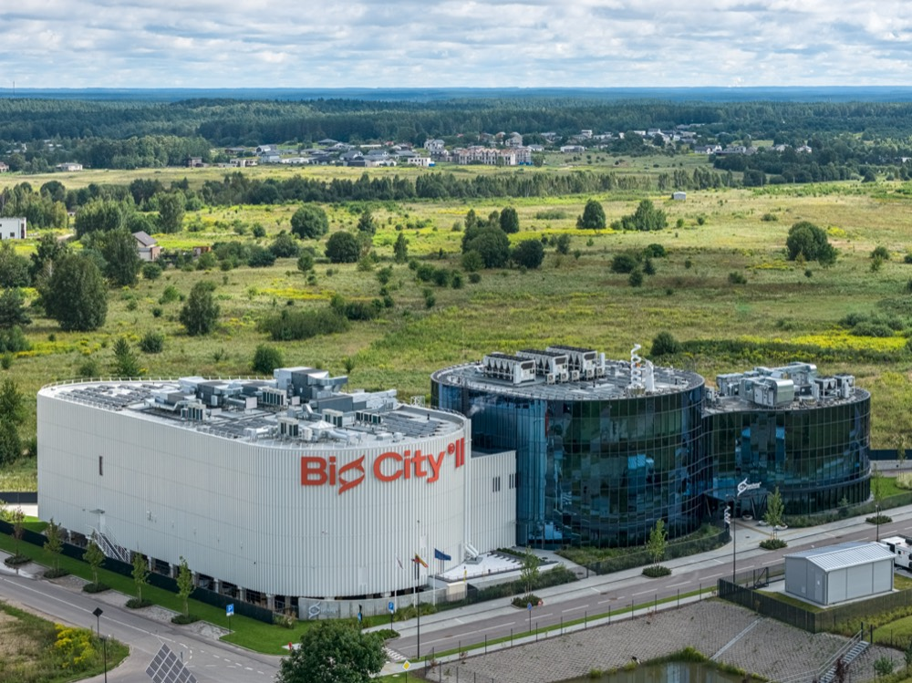
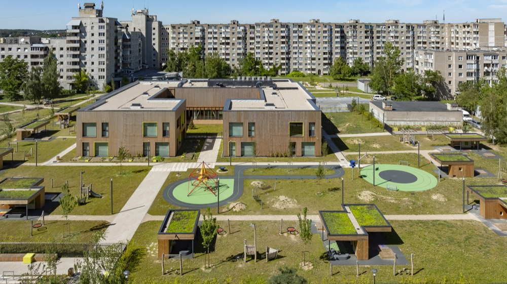
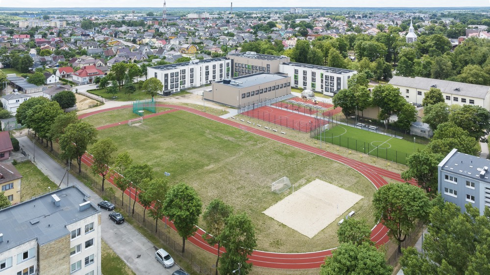
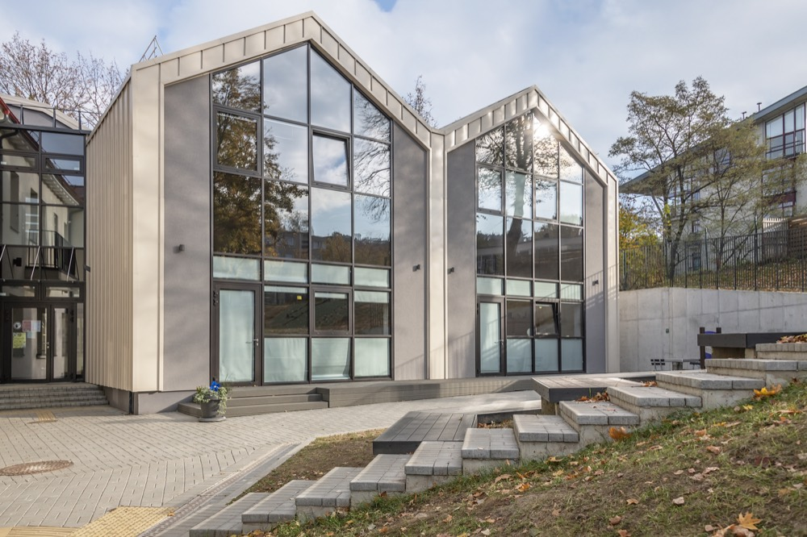
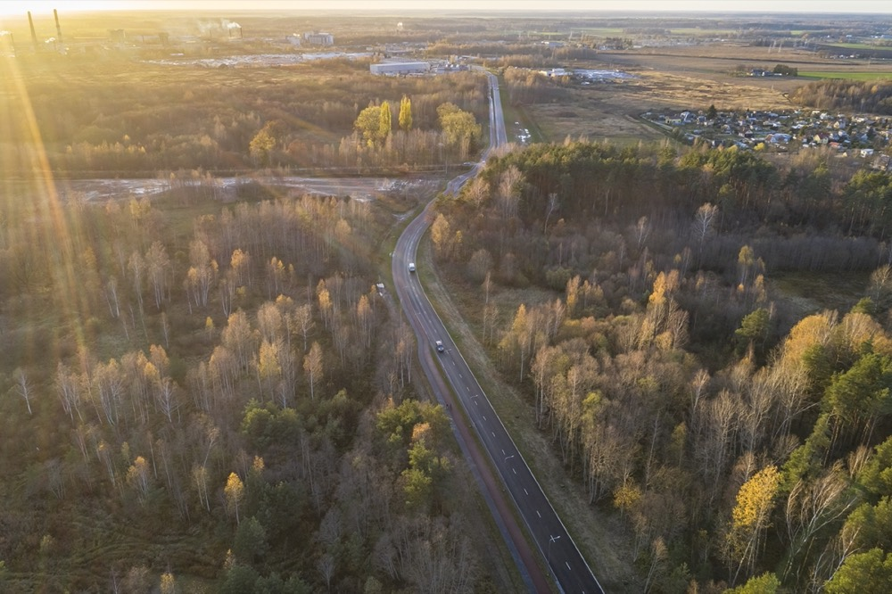
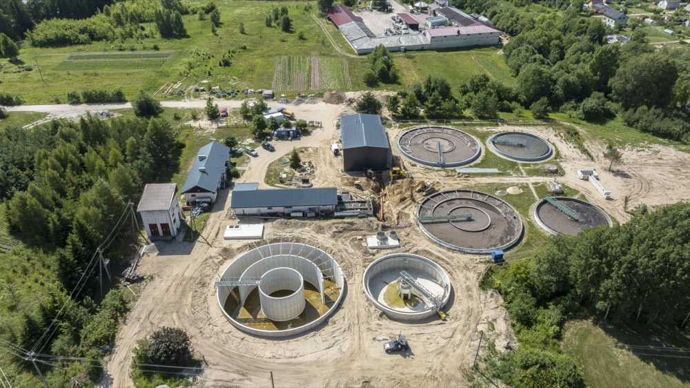
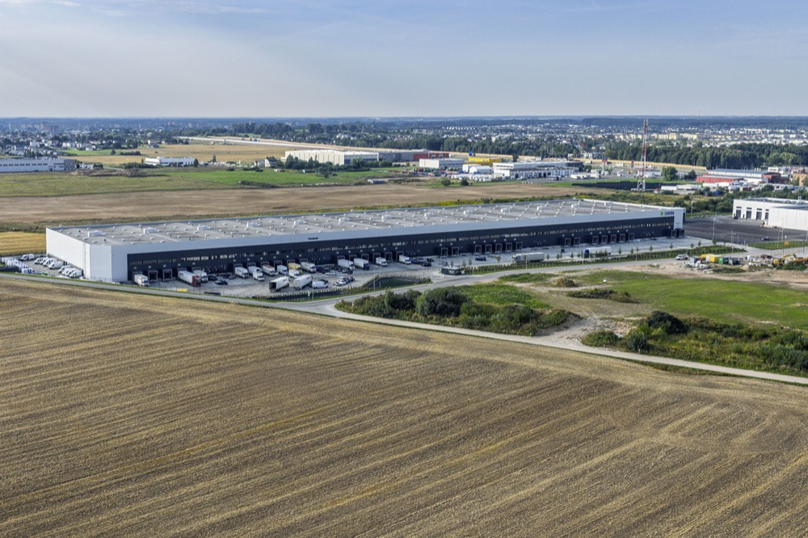
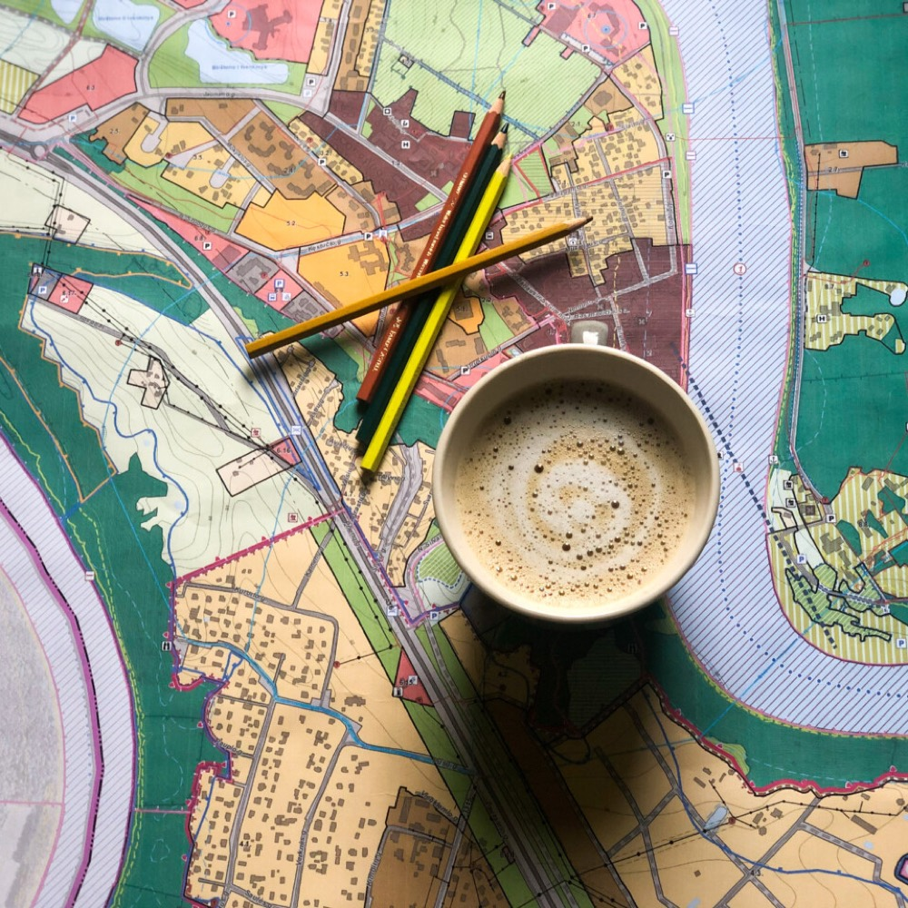

Mūsų projektai

Vilniaus miesto policijos komisariatas

Vadovybės apsaugos departamentas

Vaikų darželis „Vydūnėlis“

Plaukimo baseinas Telšiuose

Tauragės baseinas

Tauragės Martyno Mažvydo progimnazija

Joniškėlio sodo parkas

Šilo mokykla Vilniuje

Kultūros centras ir biblioteka
Sandėliavimo paskirties pastatas Kauno r.
Rūdninkų karinio miestelio urbanistinė idėja
Didmeninės prekybos pastatas Molėtų pl.
Išmanusis pėsčiųjų tiltas Kuršėnuose
Elektrėnų „Vaikų pasaulis“
Nepriklausomybės gynėjų aikštė
Marijampolės sporto arena
Butrimonių aikštė
Elektrėnų miesto centrinė aikštė
Raseikos parkas
Kuršėnų kultūros centro salės interjeras
Pabradės kultūros centras
Pasvalio muziejus
Nakvynės namai Vilniuje
Skaudvilės paplūdimys
Vakarų medienos grupės pastatų kompleksas
Raseinių alėja prie autobusų stoties

Dainų takas ir jo prieigos

Neries krantinių B atkarpa

Kairės Neries krantinės atnaujinimas

Panevėžio Šiaurinė gatvė
Klaipėdos eismo reguliavimo modernizavimas
Kelias Nr. 3313 Liepalotas–Ašminta–Pakuonis
Telšių Pramonės gatvės rekonstravimas
Nepriklausomybės gatvė Pasvalyje
Baltosios Vokės daugiabučių kvartalas
Tauragės Stoties gatvės rekonstravimas
Švenčionėlių daugiabučių kvartalas
Tauragės Tremtinių kelio rekonstravimas
Elektrėnų Draugystės gatvės rekonstravimas
Šalčininkų Šalčios skersgatvio rekonstravimas
Šilutės Šilokarčemos kvartalas
Strazdo gatvės rekonstravimas
Telšių Šviesos gatvė

Švenčionių nuotekų valykla

Kupiškio vandens gerinimo įrenginiai

Paplaujos bulvaras
Verkių–Kareivių g. lietaus nuotekų tinklai
Jonavos vandens gerinimo įrenginiai
Viekšnių nuotekų valymo įrenginiai
Šeštokų vakuuminė nuotekų stotis
„Rail Baltica“ depų plėtros vystymo planas

Aukštųjų Panerių detalusis planas
Klaipėdos rytinės dalies susisiekimo planas
